Creative direction and original illustration for the Polish Film Festival North America, held in Los Angeles. Developed the complete visual identity including two poster editions, festival logo, and all marketing collateral. The poster art blends mid-century Polish illustration traditions with Hollywood iconography — red carpet, Walk of Fame stars, the Hollywood Sign, and landmarks rendered in a bold, painterly style.
Poster

The Poster Explained
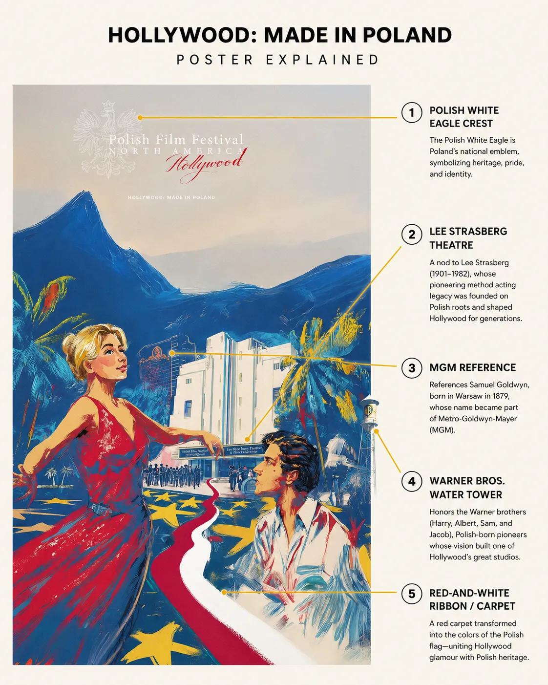
Process
from concept sketches and rendering studies through digital painting
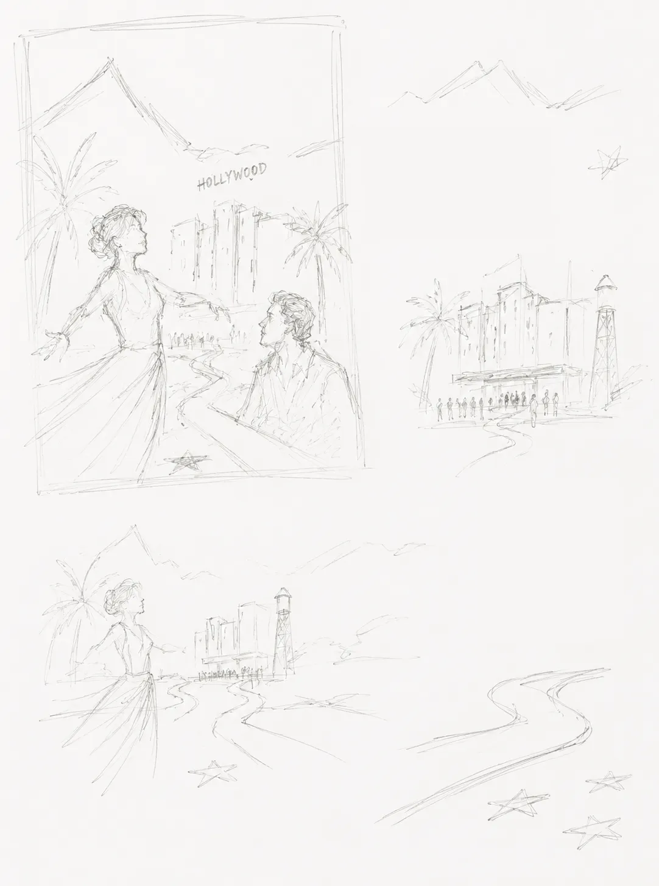
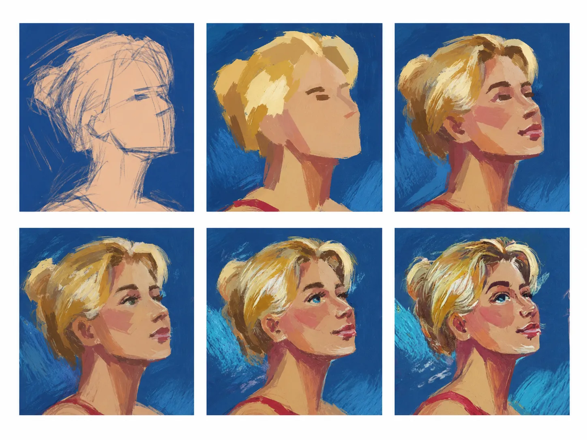
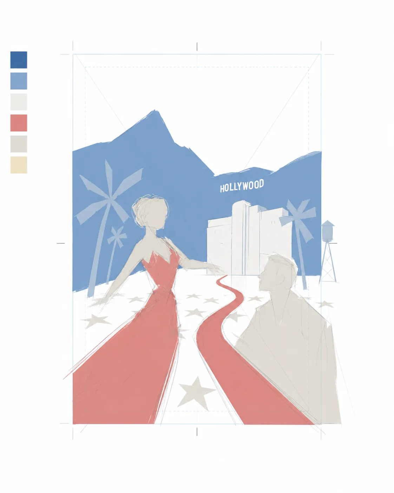
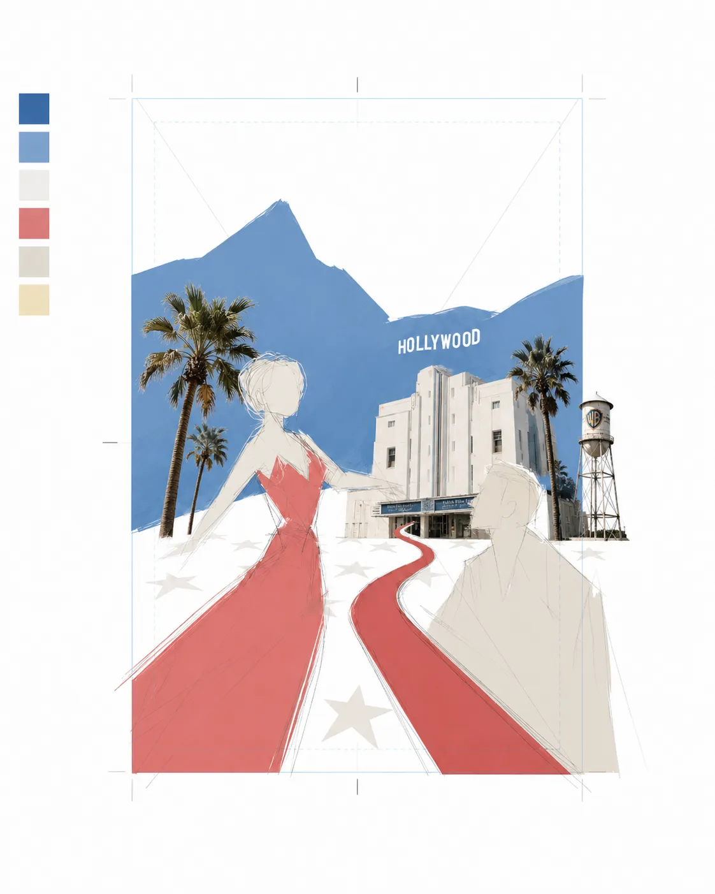
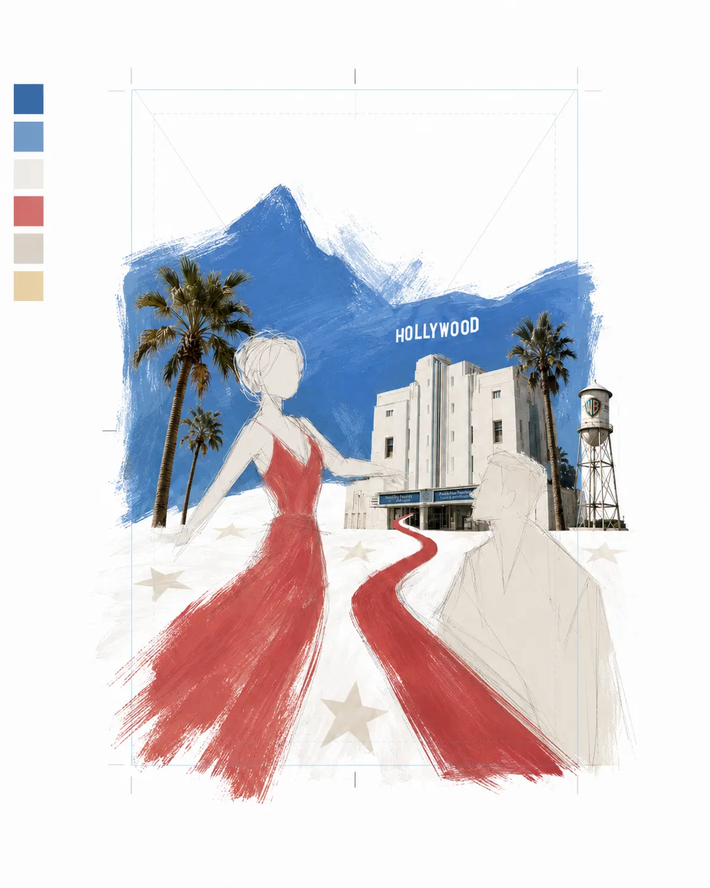
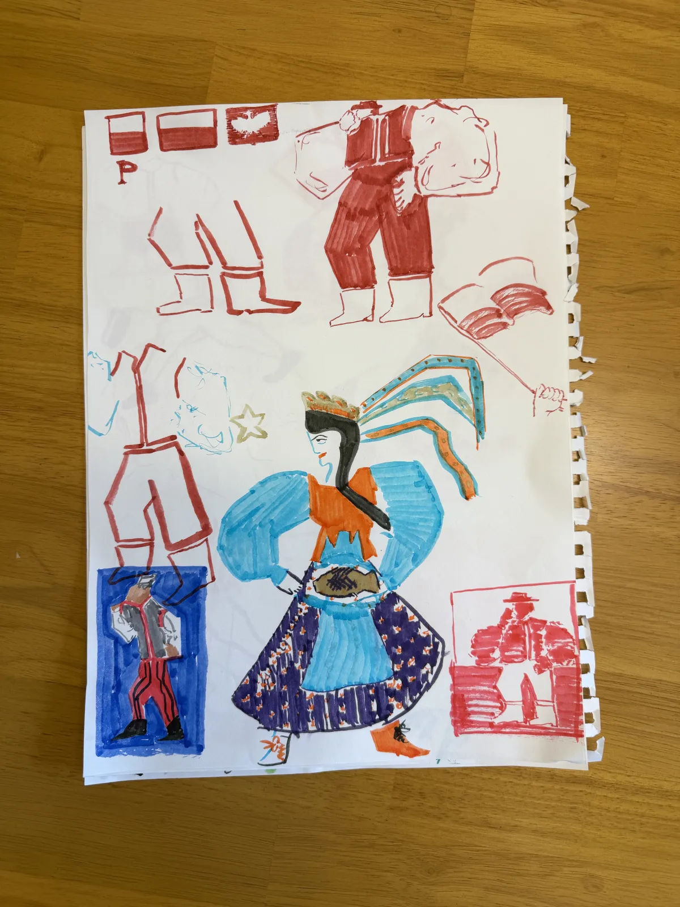
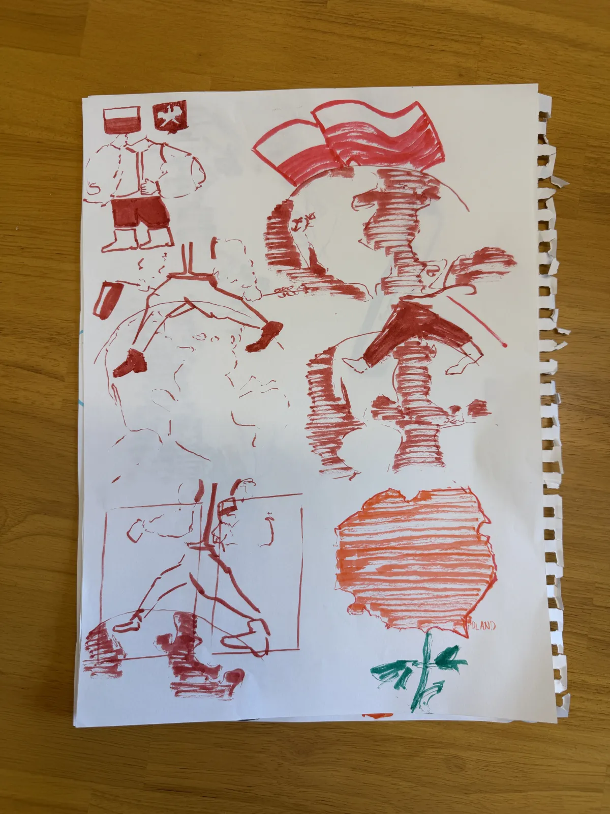
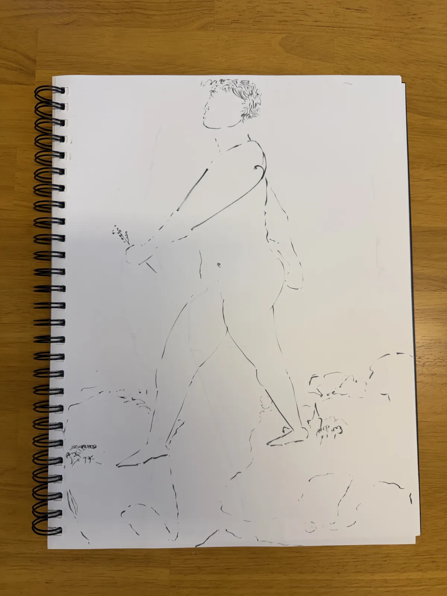
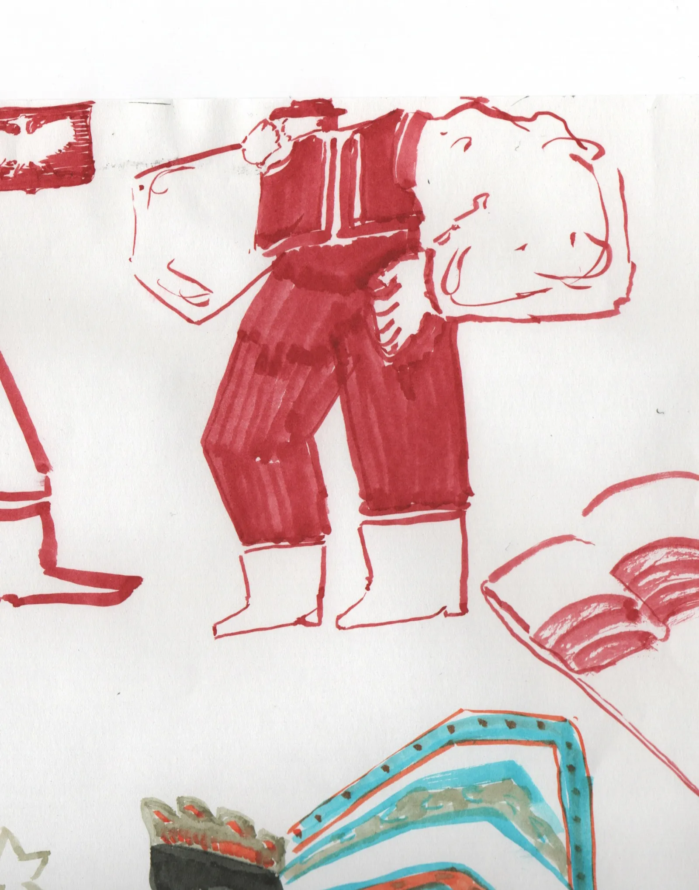
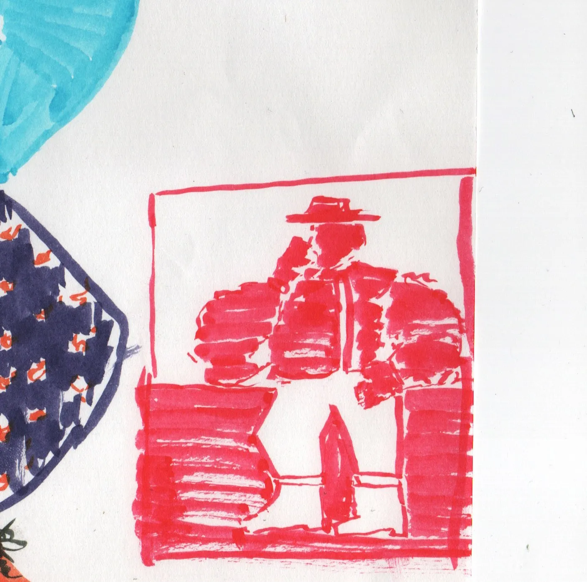
Alternate Version